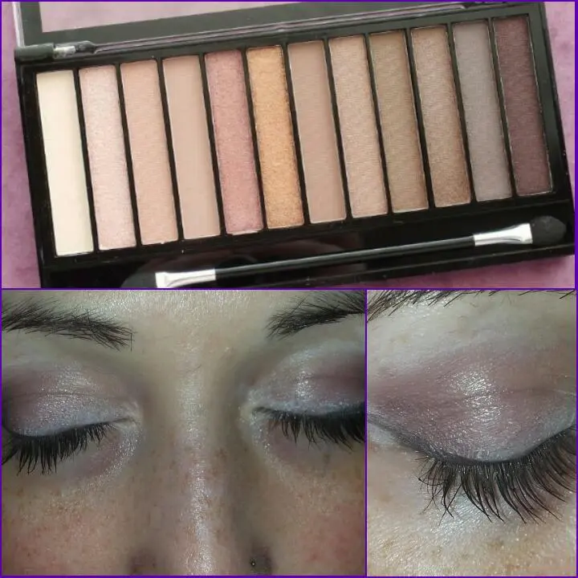

Makeup Revolution - Iconic 3
Salveeeeeee ragazze mieeeeee..
Buon 10 giugnoooooo...
Manco da un pò ma sapere com'è l'estate,gli amici,cose che devo provare ancoraaaaa...
E mi sono presa una mini vacanza da qui.
Non che io scrivessi di Continuo ma scrivervi mi piace molto.
Poi devo ancora fare una nuova manicure.
Quindi ne avrò di cose da scrivere, e spero che qualcuno mi legga e apprezza ahahahah
altrimenti non importa, lo faccio per me stessa ;D
Nei miei mille concorsi che partecipo; ho avuto la fortuna di vincere una palette che volevo prendere da un pò e grazie a un giveaway è diventata mia.
Sto parlando della Makeup Revolution - ICONIC 3 . Ovvero una delle famosissime dupe delle tanto amate Naked Urban Decay.
Io non ho provato le Urban Decay, quindi non posso haimè,farvi il paragone; ma vi posso parlare di questa qui che ho.
Vi mostro una piccola prova della stesura.
Dico 'piccola prova' perché in realtà non ho fatto un gran makeup ma una cosa veloce. Lo feci in primis perché andavo di fretta e poi perché era solo per la curiosità di vedere la consistenza del colore e della scrivenza.
Il mio giudizio è ottimo.
Partendo già dal pennello in dotazione, molto lungo e quindi per me facilita le cose e poi le spugnette che non assorbono il colore ma lo stendono bene sulla pelle.
Io ho provato prima a mettere una matita bianca sulla palpebra per uniformare il colore e rendere l'ombretto che sarei andata a stendere più netto e chiaro.
La matita bianca è quel la dell' Avon; (ragazze, le matite Avon scrivono che è una meraviglia.
Ve le consiglio veramente).
Poi dopodiché ho steso un pò di marroncino sulla palpebra, niente di particolare,ma posso dire che, a differenza di altre volte che ho usato ombretti di vario genere e dovevo tornare e tornare a ripassare il colore per colorare, questa volta è bastato farlo solo 1 volta e già mi sentivo apposto ihihihih
Cioè velocità wow.
Mi piace molto questa palette e di sicuro tornerò a farvi vedere qualche altro makeup migliore di questo.
